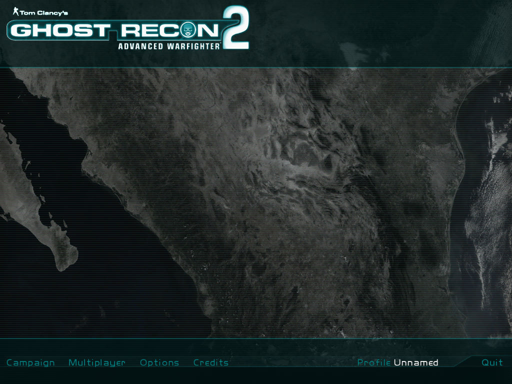
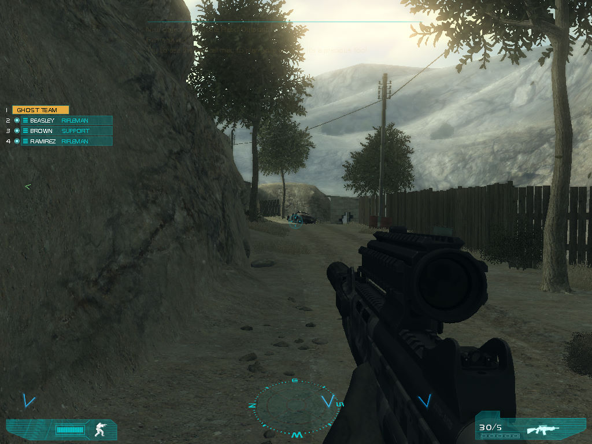

名稱：火線獵殺：先進戰士2 (Tom Clancy's Ghost Recon: Advanced Warfighter 2，英文版) 簡介：Ubisoft 2007年出品的即時戰術第一人稱射擊遊戲 [待補]。   保護：序號（HQVX-463P-9F49-PBHJ） 備註：遊戲需要使用一塊約500MB的連續實體記憶體，32位元系統會很難配置成功而當機，因 此建議在Win64系統上執行。 備註：遊戲需要安裝PhyX（本版為7.5.17）

